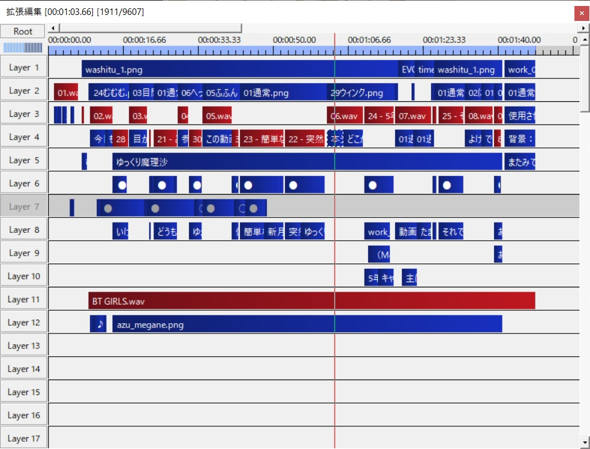

<!DOCTYPE html>
<html>

<head><meta name="generator" content="Hexo 3.8.0">
  <meta charset="utf-8">
  
    <title>
      
        動画投稿デビュー（のちょっと裏話） | 
            ほしよみ大学生のブログ
    </title>
    <meta name="viewport" content="width=device-width">
    <meta name="description" content="あいさつこんにちは，突然ですが Youtube に動画投稿してみました．もともと，「観測遠征×ボイロ（ボイスロイドの略）って誰もやってなさそうだしやりたいな…」と思っていたので，その第一歩として簡単な動画を作ってみました．">
<meta name="keywords" content="その他">
<meta property="og:type" content="article">
<meta property="og:title" content="動画投稿デビュー（のちょっと裏話）">
<meta property="og:url" content="http://dabokun.github.io/2021/06/27/00000057-douga-01/index.html">
<meta property="og:site_name" content="ほしよみ大学生のブログ">
<meta property="og:description" content="あいさつこんにちは，突然ですが Youtube に動画投稿してみました．もともと，「観測遠征×ボイロ（ボイスロイドの略）って誰もやってなさそうだしやりたいな…」と思っていたので，その第一歩として簡単な動画を作ってみました．">
<meta property="og:locale" content="ja">
<meta property="og:image" content="http://dabokun.github.io/2021/06/27/00000057-douga-01/card.jpg">
<meta property="og:updated_time" content="2021-06-27T14:14:07.782Z">
<meta name="twitter:card" content="summary_large_image">
<meta name="twitter:title" content="動画投稿デビュー（のちょっと裏話）">
<meta name="twitter:description" content="あいさつこんにちは，突然ですが Youtube に動画投稿してみました．もともと，「観測遠征×ボイロ（ボイスロイドの略）って誰もやってなさそうだしやりたいな…」と思っていたので，その第一歩として簡単な動画を作ってみました．">
<meta name="twitter:image" content="http://dabokun.github.io/2021/06/27/00000057-douga-01/card.jpg">
<meta name="twitter:creator" content="@dabo_pic">
      
        <link rel="alternative" href="/atom.xml" title="ほしよみ大学生のブログ" type="application/atom+xml">
        
          
            <link rel="icon" href="/images/favicon.png">
            
              <link rel="stylesheet" href="/css/style.css">
                <!--[if lt IE 9]><script src="//html5shiv.googlecode.com/svn/trunk/html5.js"></script><![endif]-->
                
                  <script data-ad-client="ca-pub-1350688970555904" async src="https://pagead2.googlesyndication.com/pagead/js/adsbygoogle.js"></script>
</head></html>
<body>
  <div id="container">
    <div class="mobile-nav-panel">
	<i class="icon-reorder icon-large"></i>
</div>
<header id="header">
	<h1 class="blog-title">
		<a href="/">ほしよみ大学生のブログ</a>
	</h1>
	<nav class="nav">
		<ul>
			<li><a href="/">Home</a></li><li><a href="/categories">Categories</a></li><li><a href="/tags">Tags</a></li><li><a href="/archives">Archives</a></li><li><a href="/about">About</a></li><li><a href="/work">Work</a></li>
			<li><a id="nav-search-btn" class="nav-icon" title="Search"></a></li>
			<li><a href="https://github.com/dabokun"></a>
			</li>
			<li><a href="https://twitter.com/dabo_pic"></a></li>
			<li><a href="/atom.xml" id="nav-rss-link" class="nav-icon" title="RSS Feed"></a>
			</li>
		</ul>
	</nav>
	<div id="search-form-wrap">
		<form action="//google.com/search" method="get" accept-charset="UTF-8" class="search-form"><input type="search" name="q" class="search-form-input" placeholder="Search"><button type="submit" class="search-form-submit">&#xF002;</button><input type="hidden" name="sitesearch" value="http://dabokun.github.io"></form>
	</div>
</header>
    <div id="main">
      <article id="post-00000057-douga-01" class="post">
	<footer class="entry-meta-header">
		<span class="meta-elements date">
			<a href="/2021/06/27/00000057-douga-01/" class="article-date">
  <time datetime="2021-06-27T13:56:59.000Z" itemprop="datePublished">2021-06-27</time>
</a>
		</span>
		<span class="meta-elements author">astr0dab0</span>
		<div class="commentscount">
			
			<a href="http://dabokun.github.io/2021/06/27/00000057-douga-01/#disqus_thread" class="article-comment-link">Comments</a>
			
		</div>
	</footer>
	
	<header class="entry-header">
		
  
    <h1 class="article-title entry-title" itemprop="name">
      動画投稿デビュー（のちょっと裏話）
    </h1>
  

	</header>
	<div class="entry-content">
		
		
		<div id="toc" class="toc-article">
			<p class="toc-title">目次</p>
			<ol class="toc"><li class="toc-item toc-level-3"><a class="toc-link" href="#あいさつ"><span class="toc-number">1.</span> <span class="toc-text">あいさつ</span></a></li><li class="toc-item toc-level-3"><a class="toc-link" href="#作ってみる"><span class="toc-number">2.</span> <span class="toc-text">作ってみる</span></a></li></ol>
		</div>
		
		<h3 id="あいさつ"><a href="#あいさつ" class="headerlink" title="あいさつ"></a>あいさつ</h3><p>こんにちは，突然ですが Youtube に動画投稿してみました．<br>もともと，「観測遠征×ボイロ（ボイスロイドの略）って誰もやってなさそうだしやりたいな…」と思っていたので，その第一歩として簡単な動画を作ってみました．</p>
<a id="more"></a>
<h3 id="作ってみる"><a href="#作ってみる" class="headerlink" title="作ってみる"></a>作ってみる</h3><p>Aviutl を使った動画作成の経験は何度かあったので，ボイロくらいだったら一日もあれば作れるやろ！と思いましたが，素材を集めたり，ちゃんとしたものを作ろうと思うと一分のものを作るだけでも一苦労．<br>編集画面，使いこなせてないのでごちゃごちゃｗ<br>まだ慣れていないソフトがあったりもして，結局2日くらいのうち暇な時間をかけて一本目を作ることができましたが，扱いやすい素材などがたくさん転がっていて，ありがたい時代になったものです…(？)．</p>
<div class="video-container"><iframe src="//www.youtube.com/embed/2E9TI3p3N8E" frameborder="0" allowfullscreen></iframe></div>
<p>なんのこともないただの自己紹介動画です．次回から本格的に車載や撮影の模様をお届けできればいいなと思っています．</p>
<p>あまり頻繁に更新できないかもしれませんが（目指せ月１更新），もしよければチャンネル登録，高評価をよろしくお願いいたします！m(_ _)m</p>

		
	</div>
	<footer class="article-footer">
		<a href="https://twitter.com/intent/tweet?text=%E5%8B%95%E7%94%BB%E6%8A%95%E7%A8%BF%E3%83%87%E3%83%93%E3%83%A5%E3%83%BC%EF%BC%88%E3%81%AE%E3%81%A1%E3%82%87%E3%81%A3%E3%81%A8%E8%A3%8F%E8%A9%B1%EF%BC%89｜%E3%81%BB%E3%81%97%E3%82%88%E3%81%BF%E5%A4%A7%E5%AD%A6%E7%94%9F%E3%81%AE%E3%83%96%E3%83%AD%E3%82%B0&url=http://dabokun.github.io/2021/06/27/00000057-douga-01/" class="twitter-share-button" target="_blank" title="Twitter"></a>
		<script async src="https://platform.twitter.com/widgets.js" charset="utf-8"></script>

		<div id="fb-root"></div>
		<script async defer crossorigin="anonymous" src="https://connect.facebook.net/ja_JP/sdk.js#xfbml=1&version=v4.0"></script>
		<div class="fb-share-button" data-href="http://dabokun.github.io/2021/06/27/00000057-douga-01/" data-layout="button_count" data-size="small"><a target="_blank" href="https://www.facebook.com/sharer/sharer.php?u=https%3A%2F%2Fdabokun.github.io%2F&amp;src=sdkpreparse" class="fb-xfbml-parse-ignore">シェア</a></div>
	</footer>
	<footer class="entry-footer">
		<div class="entry-meta-footer">
			<span class="category">
				
  <div class="article-category">
    <a class="article-category-link" href="/categories/others/">その他</a>
  </div>

			</span>
			<span class=" tags">
				
  <ul class="article-tag-list"><li class="article-tag-list-item"><a class="article-tag-list-link" href="/tags/others/">その他</a></li></ul>

			</span>
		</div>
	</footer>
	
	
<nav id="article-nav">
  
    <a href="/2021/07/17/00000058-call-pcl/" id="article-nav-newer" class="article-nav-link-wrap">
      <strong class="article-nav-caption">Newer</strong>
      <div class="article-nav-title">
        
          PixInsight Class Library を自作プログラムから呼び出してみる
        
      </div>
    </a>
  
  
    <a href="/2021/06/16/00000056-aflak-improc-03/" id="article-nav-older" class="article-nav-link-wrap">
      <strong class="article-nav-caption">Older</strong>
      <div class="article-nav-title">
        
          ArcsinhStretch について調べて，追実装してみる
        
      </div>
    </a>
  
</nav>

	
</article>


<section id="comments">
	<div id="disqus_thread">
		<noscript>Please enable JavaScript to view the <a href="//disqus.com/?ref_noscript">comments powered by
				Disqus.</a></noscript>
	</div>
</section>

    </div>
    <div class="mb-search">
  <form action="//google.com/search" method="get" accept-charset="utf-8">
    <input type="search" name="q" results="0" placeholder="Search">
    <input type="hidden" name="q" value="site:dabokun.github.io">
  </form>
</div>
<footer id="footer">
	<h1 class="footer-blog-title">
		<a href="/">ほしよみ大学生のブログ</a>
	</h1>
	<span class="copyright">
		&copy; 2021 astr0dab0<br>
		Modify from <a href="http://sanographix.github.io/tumblr/apollo/" target="_blank">Apollo</a> theme, designed by <a href="http://www.sanographix.net/" target="_blank">SANOGRAPHIX.NET</a><br>
		Powered by <a href="http://hexo.io/" target="_blank">Hexo</a>
	</span>
</footer>
    
<script>
  var disqus_shortname = 'astr0dab0';
  
  var disqus_url = 'http://dabokun.github.io/2021/06/27/00000057-douga-01/';
  
  (function(){
    var dsq = document.createElement('script');
    dsq.type = 'text/javascript';
    dsq.async = true;
    dsq.src = '//go.disqus.com/embed.js';
    (document.getElementsByTagName('head')[0] || document.getElementsByTagName('body')[0]).appendChild(dsq);
  })();
</script>


<script src="//ajax.googleapis.com/ajax/libs/jquery/2.0.3/jquery.min.js"></script>


<link rel="stylesheet" href="/fancybox/jquery.fancybox.css" media="screen" type="text/css">
<script src="/fancybox/jquery.fancybox.pack.js"></script>


<script src="/js/script.js"></script>
  </div>
</body>
</html>